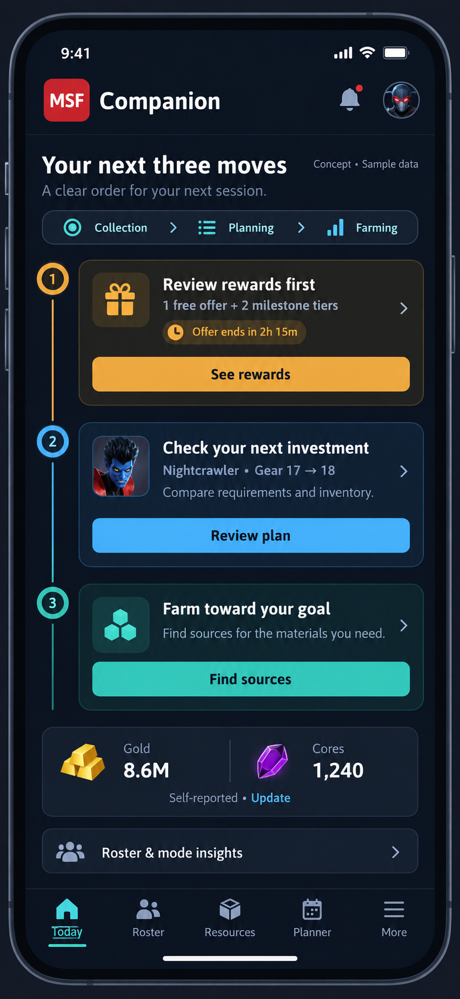
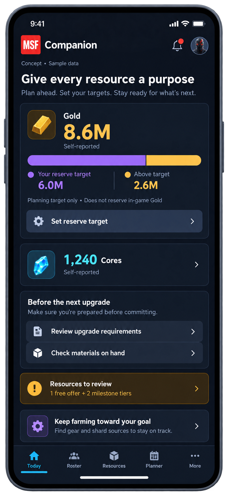
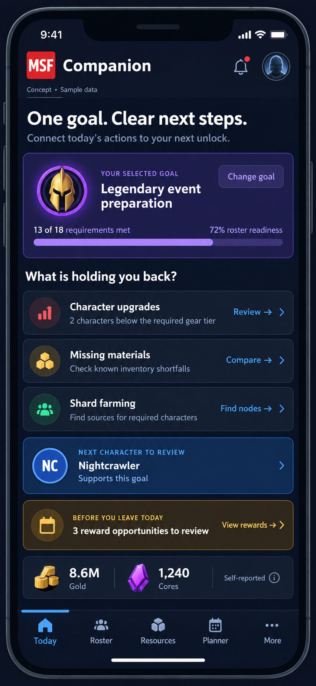
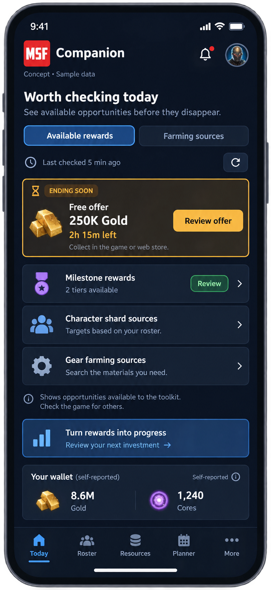
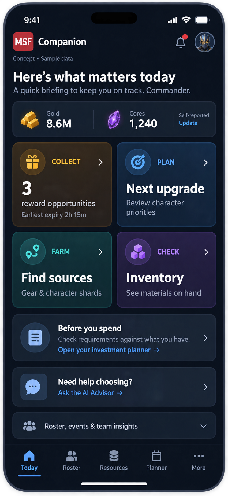

D · Daily Route
A guided sequence: review available rewards, consider the next upgrade, then choose farming sources. It reduces decision overload for a quick daily session. The sequence is guidance, not automatic completion tracking.
{kind=link}

Dashboard concepts D–H. Each answers a different daily question. Select an image to inspect it at full size.
Concepts use sample data. The original application is unchanged.
A guided sequence: review available rewards, consider the next upgrade, then choose farming sources. It reduces decision overload for a quick daily session. The sequence is guidance, not automatic completion tracking.

A commander-set reserve target makes the tradeoff between saving and upgrading visible. Balances are self-reported, and the target does not lock resources in the game. This option introduces a new budgeting feature.

An event or unlock anchors the page. Requirements, missing materials, and farming sources explain what blocks progress and why a character deserves attention. Goal selection would need to be connected to the existing planner.

A reward inbox puts expiry and source freshness ahead of roster statistics. It directly addresses leaving resources uncollected, while showing only opportunities the toolkit can verify.

Four large tiles—Collect, Plan, Farm, Check—balance resource collection and spending decisions. It favors quick scanning and direct access over a prescribed sequence.

{kind=link}
{kind=link}
{kind=link}
{kind=link}